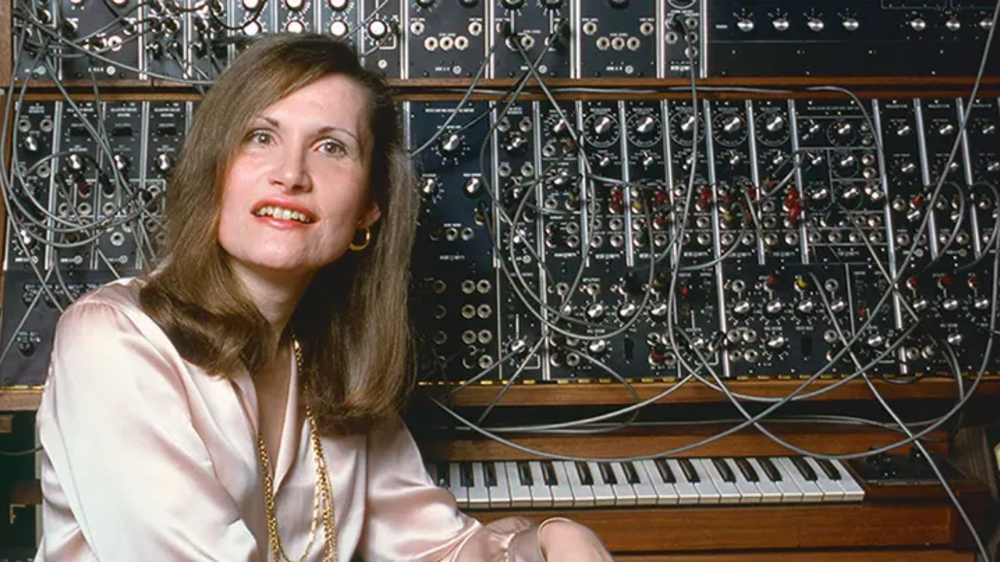

POPULARES
Wendy Carlos
Intérprete y compositora
La educación musical de Wendy comenzó cuando empezó a tocar el piano a los seis años. En su educación académica pasó por la Brown University (Rhode Island), donde estudió música y física, y la Universidad de Columbia (Nueva York), donde obtuvo un máster en música. En Columbia Wendy Carlos fue alumna del pionero de la música electrónica Vladimir Ussachevsky y desde 1962 reside en la ciudad de Nueva York. Tras la graduación conoció a Robert Moog y fue una de sus primeros clientes, sirviendo de ensayo para el posterior desarrollo del sintetizador Moog modular. Hacia 1966 Carlos conoció a Rachel Elkind, con quien forjó una relación profesional duradera.
Sus primeras seis grabaciones se publicaron con el nombre de Walter Carlos, aunque, siendo transexual, ya había cambiado su nombre Walter por Wendy. En 1972, Carlos se sometió a una terapia de cambio de sexo. La última publicación acreditada como Walter Carlos fue By Request (1975) y la primera como Wendy Carlos fue Switched-On Brandenburgs (1979). Su primera aparición tras el cambio de sexo fue una entrevista en la revista Playboy (mayo de 1979), una decisión de la que más tarde se arrepentiría debido al mal gusto y poca seriedad con que el autor tomó y manipuló deliberadamente detalles tan privados durante su transición y, por ende, la publicidad indeseada que atrajo sobre su vida privada. En su página oficial discute su transexualidad en un artículo en el que manifiesta que aprecia su privacidad sobre el tema.
En 1971 Wendy Carlos firmó la banda sonora de la película dirigida por Stanley Kubrick La naranja mecánica (A Clockwork Orange). En un principio Kubrick había pensado ligar el aspecto musical de la película al rock llevando a cabo contactos con The Rolling Stones para que encarnaran a algunos personajes de la trama y con Pink Floyd para componer la banda sonora, pero ambas bandas se rehusaron a participar. Dado que Carlos ya había compuesto algunas piezas inspiradas en la novela de Anthony Burgess Kubrick finalmente decidió contratarla para la creación de la música en un complejo proceso que, finalmente, dio como resultado una mezcla de reinterpretaciones electrónicas de composiciones de música clásica y creaciones basadas en la utilización del sintetizador analógico moog. Entre las composiciones figuran obras como Música fúnebre para la reina María de Henry Purcell, la Obertura de Guillermo Tell de Gioachino Rossini y el scherzo de la Sinfonía nº 9 de Ludwig van Beethoven.
A principios del siglo XXI se remasterizó la mayor parte de su catálogo. En 2005 se publicó el doble volumen Recovering Lost Scores (en castellano Recuperación de partituras perdidas), que contenía material previamente descatalogado (la banda sonora de El resplandor), la banda sonora nunca publicada de Woundings, y música grabada para las películas Tron y La naranja mecánica que nunca fue usada.